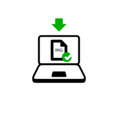
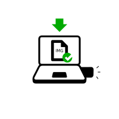
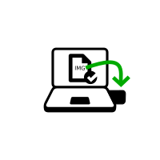
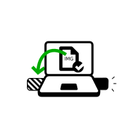
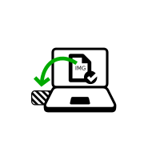
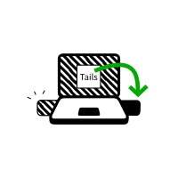
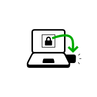

You need
1½ hours in total
½ hour
¼ hour
1.1 GB
to download
½ hour to install
½ hour to upgrade
Your Tails
1 other Tails
USB stick or DVD
1 USB stick
8 GB minimum
All data will be lost!
a smartphone
another computer,
or a printer
to follow the instructions
Your steps

Download

Download

Restart

Install

Install intermediary

Install intermediary
Restart
Restart

Install Upgrade
Restart

Configure
Restart